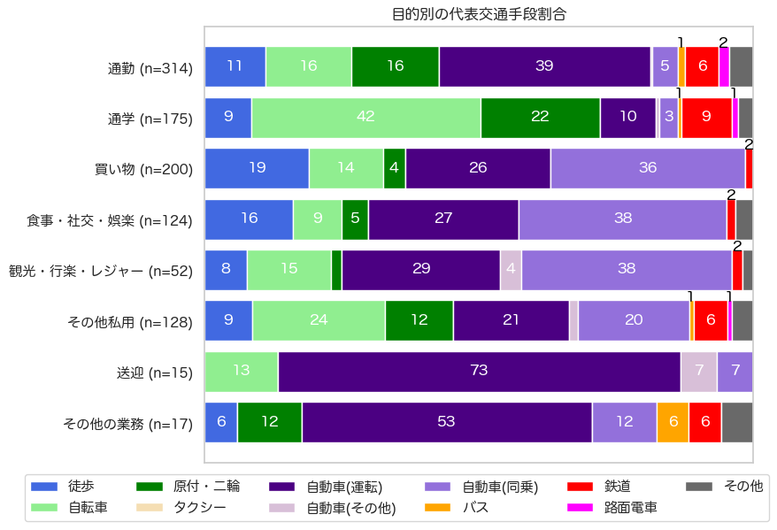
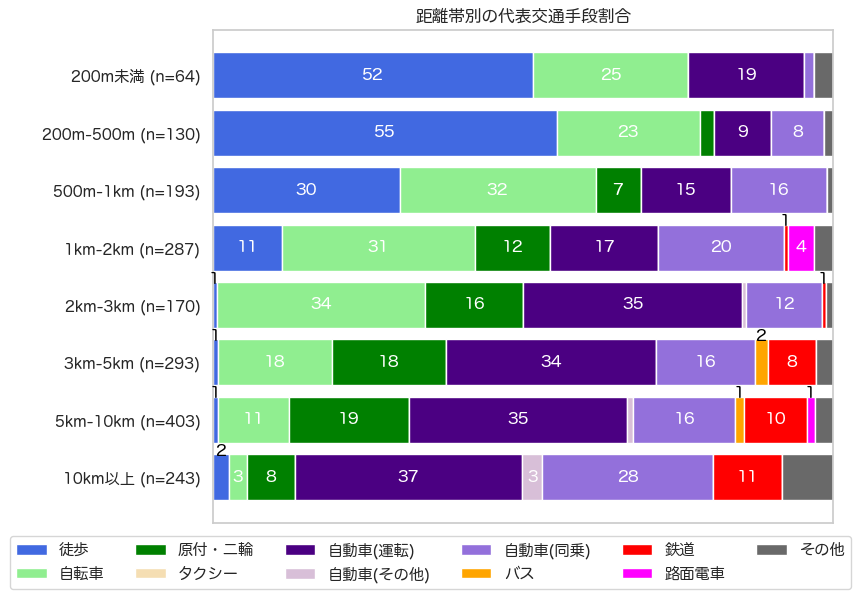

解説 8
19〜25歳の若年層の交通手段について、図1に目的別の交通手段割合を、図2に距離帯別の交通手段割合を示します。

図1：若年層の目的別の交通手段分担率
通勤・通学目的では自転車と原付・二輪が多く、徒歩と鉄道の分担率もそれぞれ約1割を占めています。 一方で、買い物、食事・社交・娯楽、観光・行楽・レジャー目的では、自ら運転する自動車や同乗の割合が高く、6〜7割を占めます。 ただ、他の年代や人口全体と比較すると、徒歩・自転車・公共交通中心の移動が実現されているといえます。

図2：若年層の距離別の交通手段分担率
距離帯で見ると、自転車の分担率が高いことが特徴で、3km以内の移動では、およそ30%を自転車が占めます。 また、長距離の移動では、鉄道の分担率も10%ほど存在することに特徴があります。